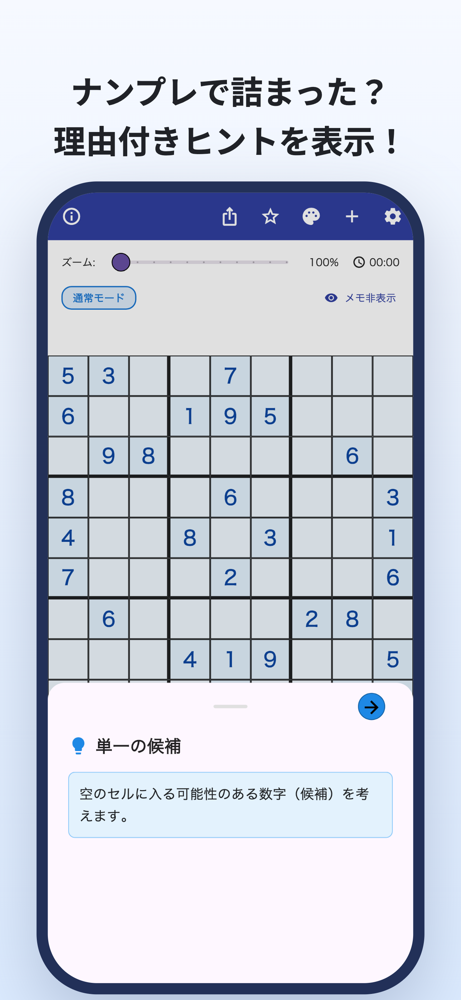
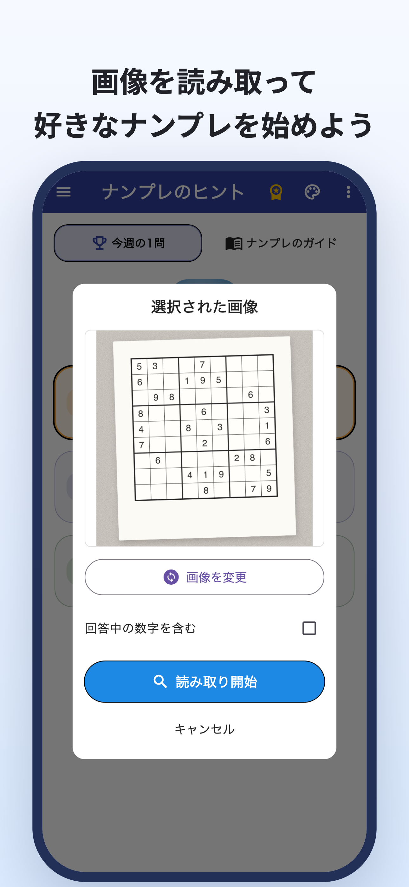
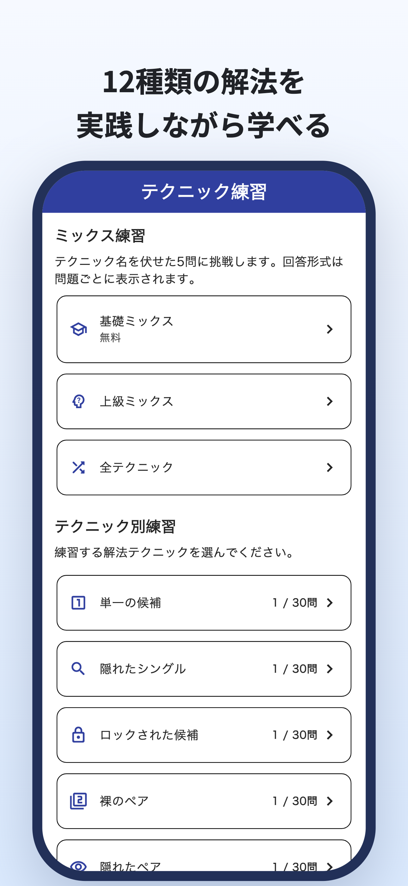
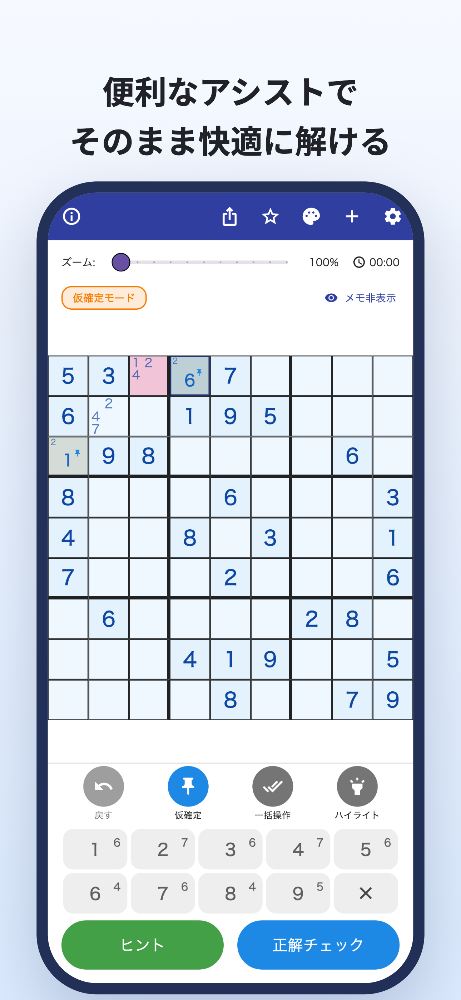
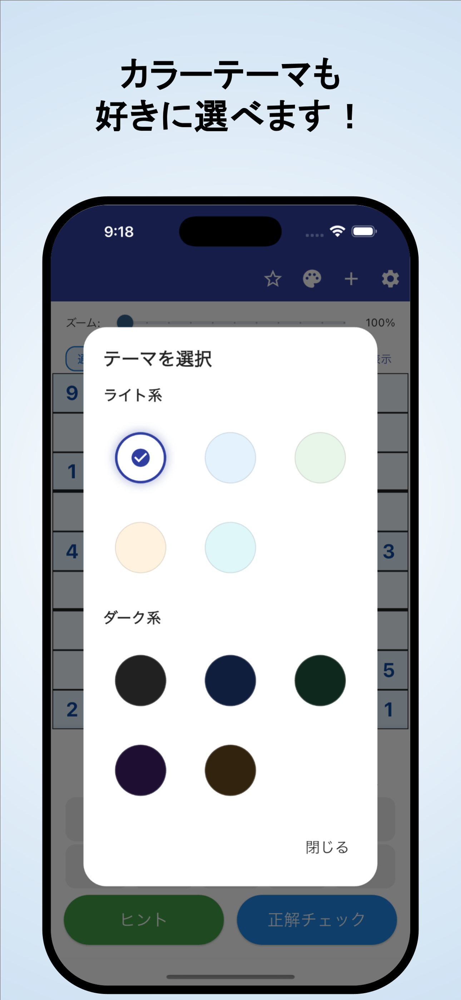

「次に、どこを見ればいい？」
何度見直しても数字が入らず、
同じところで止まってしまう。
カメラで読み取り・理由付きのヒント
新聞や雑誌の問題も、カメラで取り込み。
数字が決まる理由を知って、また自分で解き進められます。
iPhone・Android対応 / 無料ダウンロード・アプリ内課金あり





解いていると、こんなことありませんか？
何度見直しても数字が入らず、
同じところで止まってしまう。
その数字になるのは、どうして？
解答を写すだけでは物足りない。
いま解いている紙の問題を、
そのままアプリで続けたい。
その「困った」を、解く手がかりに
新聞や雑誌のナンプレを画像から読み取り。数字をひとつずつ入力する手間を減らせます。
カメラ・画像からの読み取りヒントで数字が入る理由を確認。答えを埋めるだけでなく、次の一手を考える手がかりになります。
根拠がわかるヒント・解説手筋ごとの解説と練習で、気になる解き方を確認。覚えた手筋を、自分で見つける練習ができます。
手筋の解説・テクニック練習自分で解く楽しさを、大切にしたい方へ
いつもの問題を取り込んで、続きから解きたい。
詰まったところの理由を確かめて、自分で進めたい。
初心者の方も、次の手筋を学びたい方も。
読む・試す・練習する
まずはブラウザで。
解説を読んだり、1問遊んだりできます。
青枠のマスに注目して、「ヒントを見る」を押してみてください。
どこから考える？
青枠のマスと同じ行・列・ブロックには、どの数字があるでしょう。
解き方を体験するWeb用の例題です。アプリとは表示が異なります。
ナンプレで詰まったら。
「ナンプレのヒント」をダウンロード
無料ダウンロード・アプリ内課金あり
無料でダウンロードして試せます。ヒント・正解チェック・画像の読み取りなどには利用回数の制限があり、機能によって動画広告の視聴が必要になります。
プレミアムは月額・年額のサブスクリプションです。広告の非表示、ヒント・正解チェックの無制限利用などに対応しています。読み取りにはプレミアムでも上限があります。料金・利用条件はアプリ内で確認できます。
カメラで撮影したナンプレの画像を読み込めます。読み取り結果を確認し、数字が違っていたら修正してから始めてください。一般的な9×9のナンプレが対象です。
アプリ内の問題でも遊べます。解き方を覚えたいときは、手筋ごとの解説・練習も利用できます。一部の問題・練習はプレミアム向けです。
このページの一手のデモに加え、ブラウザで1問遊べる体験版と、手筋の解説・練習を用意しています。
楽しみ方・解き方のガイドへ